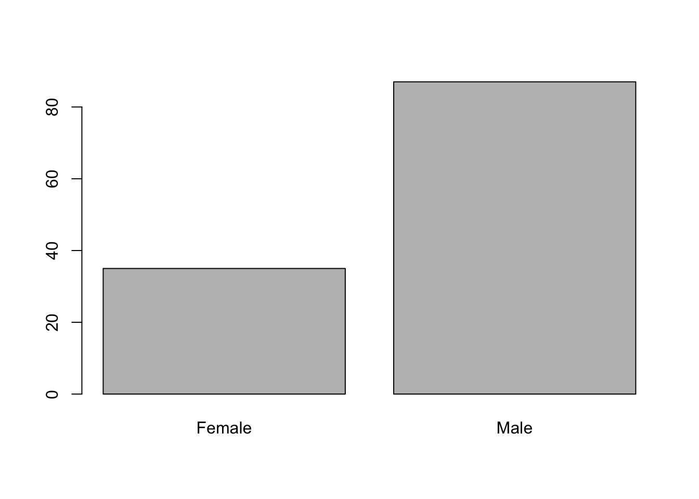
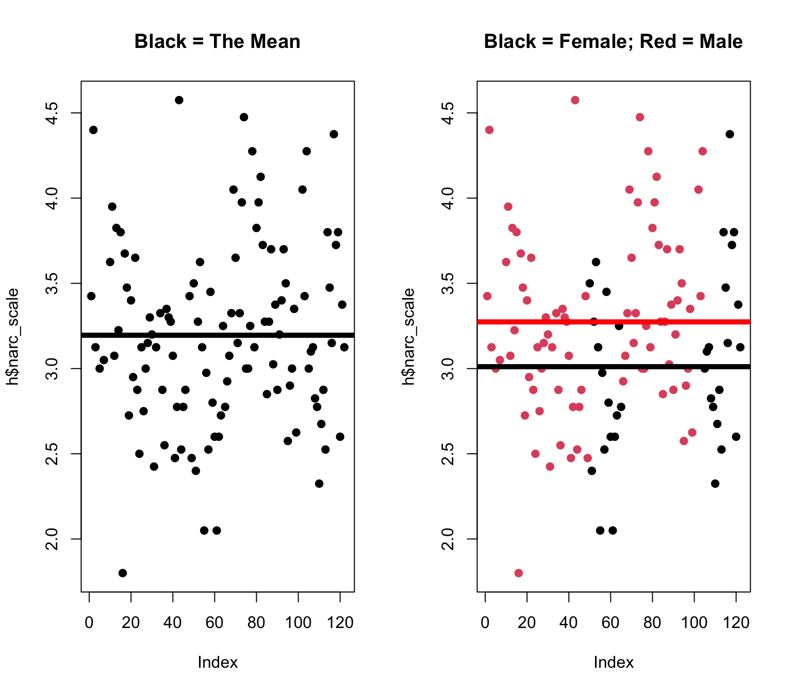
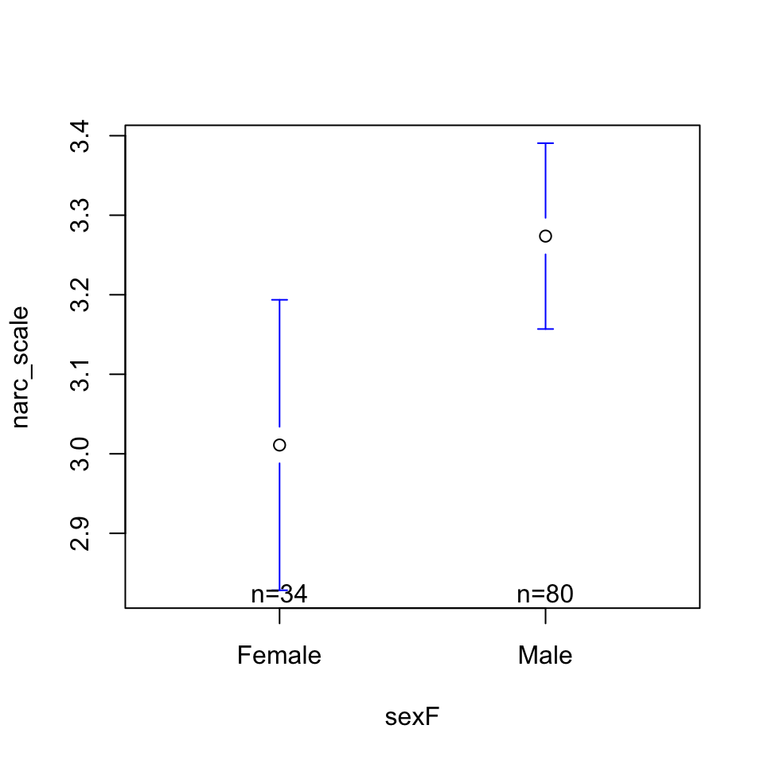
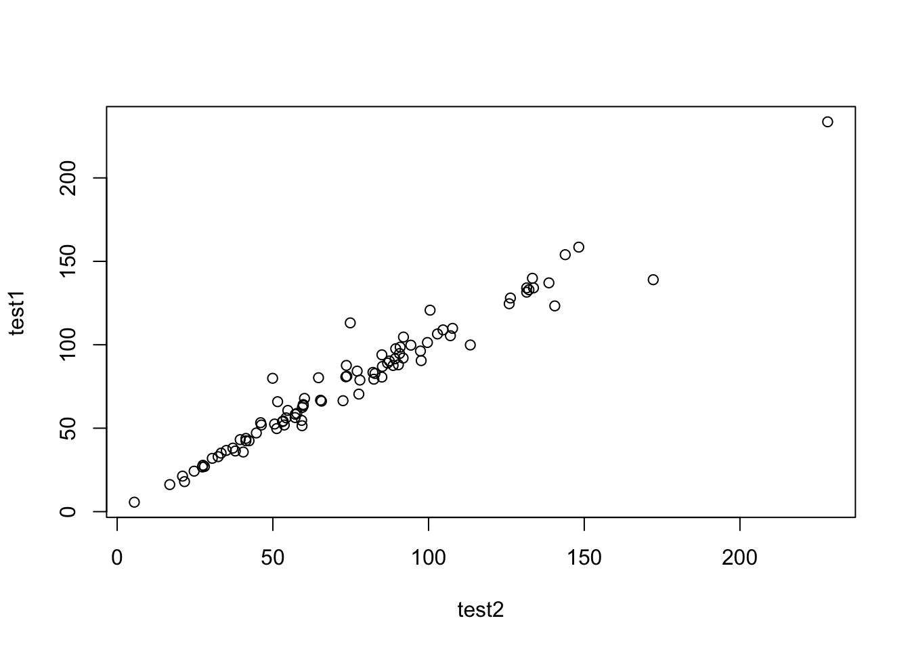
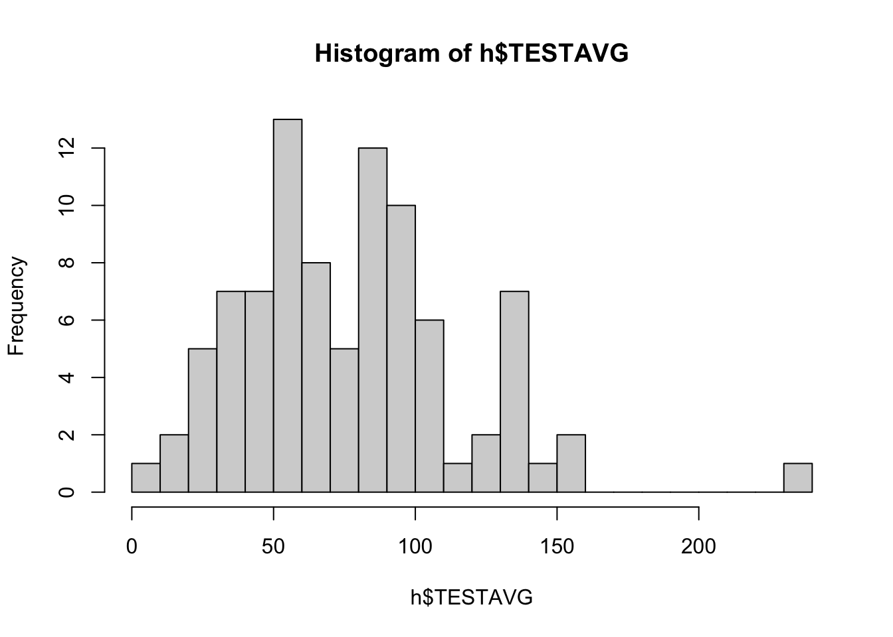

par(mfrow = c(1,2))
wrongage <- h$age
hist(wrongage)
h$age[h$age < 0] <- NA
hist(h$age)
knitr::kable(cbind(mean = mean(wrongage, na.rm = T),
mean = mean(h$age, na.rm = T)))| mean | mean |
|---|---|
| 19.53279 | 27.85088 |
Please complete this check-in as a warm-up!
Use the hormone dataset to…
Description of Variables
par(mfrow = c(1,2))
wrongage <- h$age
hist(wrongage)
h$age[h$age < 0] <- NA
hist(h$age)
knitr::kable(cbind(mean = mean(wrongage, na.rm = T),
mean = mean(h$age, na.rm = T)))| mean | mean |
|---|---|
| 19.53279 | 27.85088 |
h$sexF <- as.factor(h$sex)
levels(h$sexF) <- c("Male", "Female")
h$sexF <- relevel(h$sexF, ref = "Female")
plot(h$sexF)
summary(h$sexF)Female Male
35 87 ggplot(h, aes(x = sexF, y = narc_scale)) +
stat_summary(fun = mean, geom = "bar", width = .2) +
geom_smooth(method = "lm", aes(group = 1), se = FALSE) +
coord_cartesian(ylim = c(1, 5)) +
xlab("Sex of Participant") + ylab("Narcissism Score (1-5 Scale)") +
ggthemes::theme_base()
library(jtools)
mod1 <- lm(narc_scale ~ sexF, data = h)
export_summs(mod1)| Model 1 | |
|---|---|
| (Intercept) | 3.01 *** |
| (0.09) | |
| sexFMale | 0.26 * |
| (0.11) | |
| N | 114 |
| R2 | 0.05 |
| *** p < 0.001; ** p < 0.01; * p < 0.05. | |
Which of these came to mind? Which are relevant?
Note : Correlation is not causation but causation will be correlated :)
par(mfrow = c(1,2))
plot(h$narc_scale, pch = 19, main = "Black = The Mean")
abline(h = mean(h$narc_scale, na.rm = T), lwd = 5)
plot(h$narc_scale, col = h$sexF, pch = 19, main = "Black = Female; Red = Male")
abline(h = coef(mod1)[1], col = 'black', lwd = 5)
abline(h = coef(mod1)[1] + coef(mod1)[2], col = 'red', lwd = 5)
\[ \hat{Y} = a + b_1 * X_1 + {\epsilon}_i \]
\[ {\epsilon}_i = \hat{Y} - (a + b_1 * X_1) \] Error = Actual Scores - Predicted Values
SST <- sum((mod1$model$narc_scale - mean(mod1$model$narc_scale))^2)
SSM <- sum(mod1$residuals^2)
SST[1] 32.46321SSM[1] 30.81636SST - SSM[1] 1.646843(SST - SSM)/SST[1] 0.05072953summary(mod1)$r.squared # relative difference[1] 0.05072953How do we use this knowledge??
Predict narc_score from another variable in the hormone dataset (or the onboarding dataset (from last week)?)
plot(h$narc_scale ~ scale(h$narc_scale),
xlab = "Narcissism Scale (Z-Scored)",
ylab = "Narcissism Scale (Raw Units)")
library(arm)Loading required package: MASSLoading required package: MatrixLoading required package: lme4
arm (Version 1.14-4, built: 2024-4-1)Working directory is /Users/lapcat/Documents/Documents - lapcat/catterson.github.io/macssstats/slides
Attaching package: 'arm'The following objects are masked from 'package:psych':
logit, rescale, simThe following object is masked from 'package:jtools':
standardizemod1z <- standardize(mod1, NULL, TRUE)
export_summs(mod1, mod1z)| Model 1 | Model 2 | |
|---|---|---|
| (Intercept) | 3.01 *** | 0.00 |
| (0.09) | (0.05) | |
| sexFMale | 0.26 * | |
| (0.11) | ||
| c.sexF | 0.25 * | |
| (0.10) | ||
| N | 114 | 114 |
| R2 | 0.05 | 0.05 |
| *** p < 0.001; ** p < 0.01; * p < 0.05. | ||
Sex is related to narcissism…
library(gplots)
plotmeans(narc_scale ~ sexF, data = h, connect = F)
export_summs(mod1, error_format = "", scale = T, transform.response = TRUE)| Model 1 | |
|---|---|
| (Intercept) | -0.34 * |
| sexFMale | 0.49 * |
| N | 114 |
| R2 | 0.05 |
| All continuous variables are mean-centered and scaled by 1 standard deviation. *** p < 0.001; ** p < 0.01; * p < 0.05. | |
Narcissism is also related to testosterone (a hormone).
mod2 <- lm(narc_scale ~ test1, data = h)
plot(narc_scale ~ test1, data = h)
abline(mod2, lwd = 5, col = 'red')
export_summs(mod2, error_format = "", scale = T, transform.response = TRUE)| Model 1 | |
|---|---|
| (Intercept) | 0.00 |
| test1 | 0.28 ** |
| N | 86 |
| R2 | 0.08 |
| All continuous variables are mean-centered and scaled by 1 standard deviation. *** p < 0.001; ** p < 0.01; * p < 0.05. | |
But if testosterone is related to sex…
modx <- lm(test1 ~ sexF, data = h)
plotmeans(test1 ~ sexF, data = h, connect = F)
export_summs(modx, error_format = "", scale = T, transform.response = TRUE)| Model 1 | |
|---|---|
| (Intercept) | -0.94 *** |
| sexFMale | 1.34 *** |
| N | 90 |
| R2 | 0.38 |
| All continuous variables are mean-centered and scaled by 1 standard deviation. *** p < 0.001; ** p < 0.01; * p < 0.05. | |
How are they uniquely related?
mod3 <- lm(narc_scale ~ sexF + test1, data = h)
export_summs(mod1, mod2, mod3, error_format = "", scale = T, transform.response = TRUE)| Model 1 | Model 2 | Model 3 | |
|---|---|---|---|
| (Intercept) | -0.34 * | 0.00 | -0.01 |
| sexFMale | 0.49 * | 0.02 | |
| test1 | 0.28 ** | 0.27 * | |
| N | 114 | 86 | 86 |
| R2 | 0.05 | 0.08 | 0.08 |
| All continuous variables are mean-centered and scaled by 1 standard deviation. *** p < 0.001; ** p < 0.01; * p < 0.05. | |||
Predict narc_score from two variables in the hormone dataset (or the onboarding dataset (from last week)?)
Sex is related to narcissism…
library(gplots)
plotmeans(narc_scale ~ sexF, data = h, connect = F)
export_summs(mod1, error_format = "", scale = T, transform.response = TRUE)| Model 1 | |
|---|---|
| (Intercept) | -0.34 * |
| sexFMale | 0.49 * |
| N | 114 |
| R2 | 0.05 |
| All continuous variables are mean-centered and scaled by 1 standard deviation. *** p < 0.001; ** p < 0.01; * p < 0.05. | |
Narcissism is also related to testosterone (a hormone).
mod2 <- lm(narc_scale ~ test1, data = h)
plot(narc_scale ~ test1, data = h)
abline(mod2, lwd = 5, col = 'red')
export_summs(mod2, error_format = "", scale = T, transform.response = TRUE)| Model 1 | |
|---|---|
| (Intercept) | 0.00 |
| test1 | 0.28 ** |
| N | 86 |
| R2 | 0.08 |
| All continuous variables are mean-centered and scaled by 1 standard deviation. *** p < 0.001; ** p < 0.01; * p < 0.05. | |
But if testosterone is related to sex…
modx <- lm(test1 ~ sexF, data = h)
plotmeans(test1 ~ sexF, data = h, connect = F)
export_summs(modx, error_format = "", scale = T, transform.response = TRUE)| Model 1 | |
|---|---|
| (Intercept) | -0.94 *** |
| sexFMale | 1.34 *** |
| N | 90 |
| R2 | 0.38 |
| All continuous variables are mean-centered and scaled by 1 standard deviation. *** p < 0.001; ** p < 0.01; * p < 0.05. | |
How are they uniquely related?
mod3 <- lm(narc_scale ~ sexF + test1, data = h)
export_summs(mod1, mod2, mod3, error_format = "", scale = T, transform.response = TRUE)| Model 1 | Model 2 | Model 3 | |
|---|---|---|---|
| (Intercept) | -0.34 * | 0.00 | -0.01 |
| sexFMale | 0.49 * | 0.02 | |
| test1 | 0.28 ** | 0.27 * | |
| N | 114 | 86 | 86 |
| R2 | 0.05 | 0.08 | 0.08 |
| All continuous variables are mean-centered and scaled by 1 standard deviation. *** p < 0.001; ** p < 0.01; * p < 0.05. | |||
library(ggthemes)
ggplot(data = h, aes(x = test1, y = narc_scale, color = sexF)) +
geom_point(size = .5, alpha = .3, position = "jitter") +
labs(title = "The Interaction Effect", x = "Testosterone (Time 1)", y = "Narcissism", color = "Sex") +
geom_smooth(method = lm) + theme_apa()`geom_smooth()` using formula = 'y ~ x'Warning: Removed 36 rows containing non-finite outside the scale range
(`stat_smooth()`).Warning: Removed 36 rows containing missing values or values outside the scale range
(`geom_point()`).`geom_smooth()` using formula = 'y ~ x'Warning: Removed 36 rows containing non-finite outside the scale range
(`stat_smooth()`).Warning: Removed 36 rows containing missing values or values outside the scale range
(`geom_point()`).library(arm)
mod4 <- lm(narc_scale ~ sexF * test1, data = h)
mod1z <- standardize(mod1, NULL, TRUE)
mod2z <- standardize(mod2, NULL, TRUE)
mod3z <- standardize(mod3, NULL, TRUE)
mod4z <- standardize(mod4, NULL, TRUE)
export_summs(mod1z, mod2z, mod3z, mod4z, error_format = "", scale = T, transform.response = TRUE)| Model 1 | Model 2 | Model 3 | Model 4 | |
|---|---|---|---|---|
| (Intercept) | -0.34 * | 0.00 | -0.01 | 0.37 |
| c.sexF | 0.49 * | 0.02 | -0.34 | |
| z.test1 | 0.28 ** | 0.27 * | 0.69 | |
| c.sexF:z.test1 | -0.48 | |||
| N | 114 | 86 | 86 | 86 |
| R2 | 0.05 | 0.08 | 0.08 | 0.09 |
| All continuous variables are mean-centered and scaled by 1 standard deviation. *** p < 0.001; ** p < 0.01; * p < 0.05. | ||||
Bertrand, M., & Mullainathan, S. (2004). Are Emily and Greg more employable than Lakisha and Jamal? A field experiment on labor market discrimination. American economic review, 94(4), 991-1013. [Link]

Hoffman, M., Gneezy, U., & List, J. A. (2011). Nurture affects gender differences in spatial abilities. Proceedings of the National Academy of Sciences, 108(36), 14786-14788. [Link]

Think about an interaction effect that might be relevant to your Capstone Project <3
What is some PATTERN in the data that you expect to see or would be interested to test?
How might some OTHER variable influence this pattern?
Anti-Positivism : Attempts to predict people with numbers is bad.
Positivism : We will someday make perfect predictions about people.
Post-Positivism : We will continually improve our predictions, but never get perfect.
Social Constructivism : There is no “truth” about people; we make it up.
o <- read.csv("~/Dropbox/!GRADSTATS/COMPSS222/Datasets/Class Datasets/MaCSS - Onboarding Data/DATASET_MACSS_onboard_SP26.csv", stringsAsFactors = T)
plot(o$epistemology, col = "black", bor = "white", main = "Epistemologies")
how to tell the difference between normal academic criticism of a study and criticism that comes from bias against the researcher?
I’d love to see some interview snippts of white interviewees’ answers. [PROF AGREES : the fact they did not include is an example of low DISCRIMINANT VALIDITY, since would want to see evidence that white people are not talking about these things too.]
Objectivity armoring…feels like it has a cultural dimension that we can explore in class as well. [PROF SAYS : YES!]


plot(test1 ~ test2, data = h)
test.df <- cbind(h$test1, h$test2)
h$TESTAVG <- rowMeans(test.df, na.rm = T)
hist(h$TESTAVG, breaks = 20)
| Likert Scale Item | Positive or Negative Key Item“Yes” = High in Self-Esteem = Positive Key. | Any Issues of Face Validity? |
|---|---|---|
| Q1. I feel that I am a person of worth, at least on an equal plane with others. | ||
| Q2. I feel that I have a number of good qualities. | ||
| Q3. All in all, I am inclined to feel that I am a failure. | ||
| Q4. I am able to do things as well as most other people. | ||
| Q5. I feel I do not have much to be proud of. | ||
| Q6. I take a positive attitude toward myself. | ||
| Q7. On the whole, I am satisfied with myself. | ||
| Q8. I wish I could have more respect for myself. | ||
| Q9. I certainly feel useless at times. | ||
| Q10. At times I think I am no good at all. |